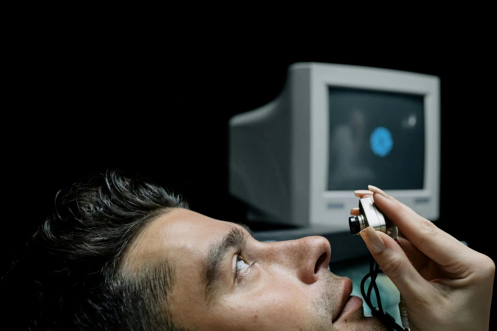

Case Study
NeuroBoost UX
Using gaze data to close the gap between what users say they see and what they actually attend to

A product team had a conversion problem that standard usability testing couldn't explain. Users self-reported noticing trust signals — badges, guarantees, social proof — but the data told a different story. The brief: go beyond stated preference and measure attention itself.
The opportunity
Traditional usability testing captures what users say they experienced. But attention is involuntary — people genuinely believe they've seen something their eyes never landed on. The gap between self-reported awareness and actual gaze behaviour was the likely source of the discrepancy between positive test feedback and underwhelming conversion performance. This wasn't a trust problem or a copy problem — it was a visibility problem hiding inside a testing blind spot.
The approach
Three design variants of the key landing pages, each with a different visual hierarchy for trust signals — tested simultaneously through eye-tracking sessions layered over task-based usability testing. Applying methods from training at the Deloitte Neuroscience Institute, each session captured both behavioural data (task completion, hesitation points, click paths) and gaze data (fixation duration, scan patterns, areas of interest) across all three variants. The A/B/C structure meant the winner wasn't chosen by opinion or conversion proxy — it was determined by which layout actually captured sustained attention on the elements that mattered.
What shipped
Comparative gaze-pattern maps across all three variants, showing exactly how each layout directed attention differently — and where the losing variants failed despite looking reasonable on paper. The winning variant wasn't the one the team had expected. The eye-tracking data gave the product team something rare: a design decision backed by physiological evidence rather than preference, removing the usual stakeholder debate about which layout "feels right."
The impact
Follow-up eye-tracking sessions confirmed the redesigned hierarchy shifted gaze behaviour toward the intended trust signals. The team moved forward with evidence-backed confidence in the new layout — replacing a cycle of A/B tests based on assumptions with a single, physiologically grounded design direction.
